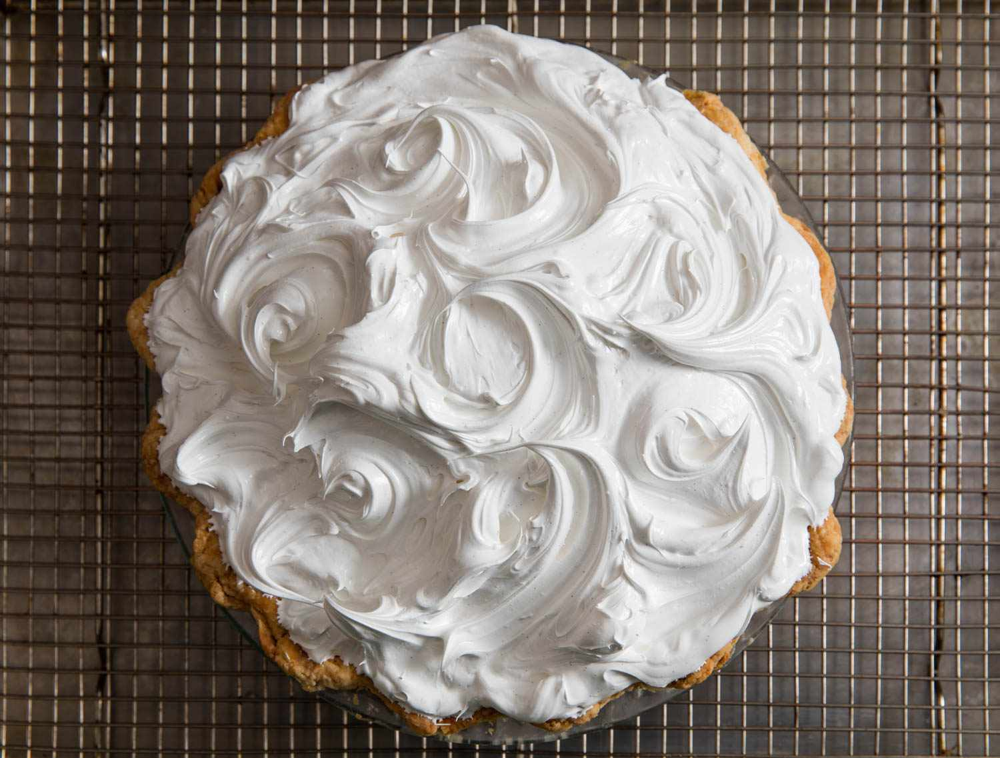

Caramel Banana Pie

This pie is incredibly easy to make, and will be a dessert your guests
are guaranteed to remember and request again in the future. There is some time
requirement with the prep-work, but nothing which requires your constant attention.
- 2-3 bananas
- 2 cans sweetened condensed milk
- 1 pie crust (I prefer graham cracker)
- Whipped cream
- Boil the cans (don’t open them) of condensed milk for about 3 ½ hours.
You need to make sure to add water every 20 minutes or so to ensure that the
cans remain completely covered by water for the entirety of the process. Otherwise
you might end up with a can of half-caramel, half-condensed milk.
- Once the cans are done put them in the fridge overnight so that they can completely cool.
- Get your pie crust ready, and cut the bananas so that you have slices about ½ inch thick.
Fill the crust so that it’s ¾ full.
- Open the cans of caramel and using either a decorating spatula or a butter knife spread
the caramel over the bananas until the crust is full.
- Top it with whipped cream, and enjoy.